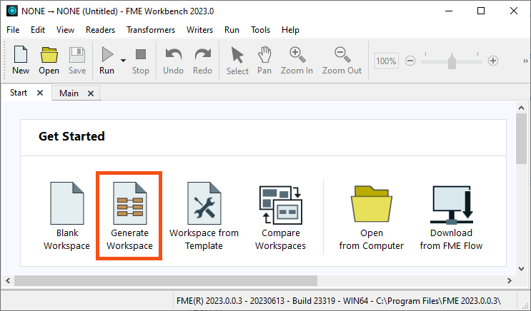
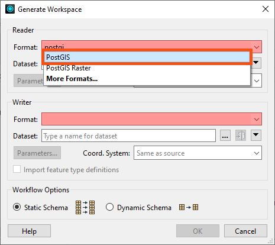
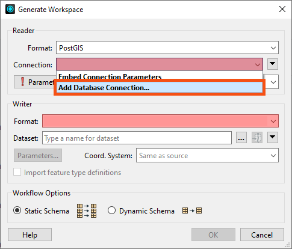
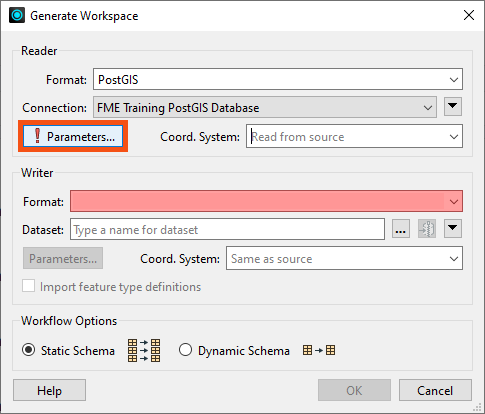
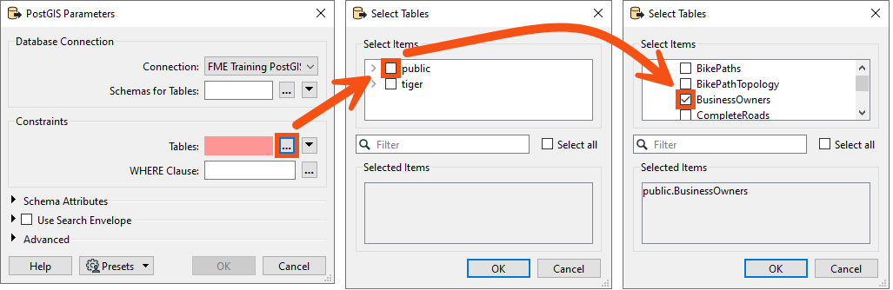
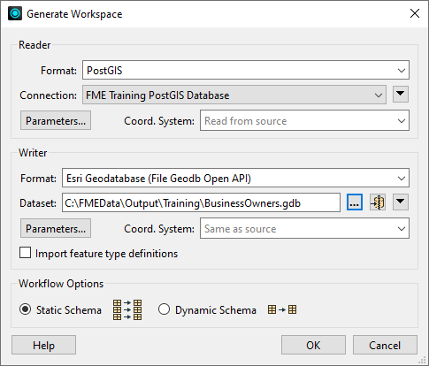
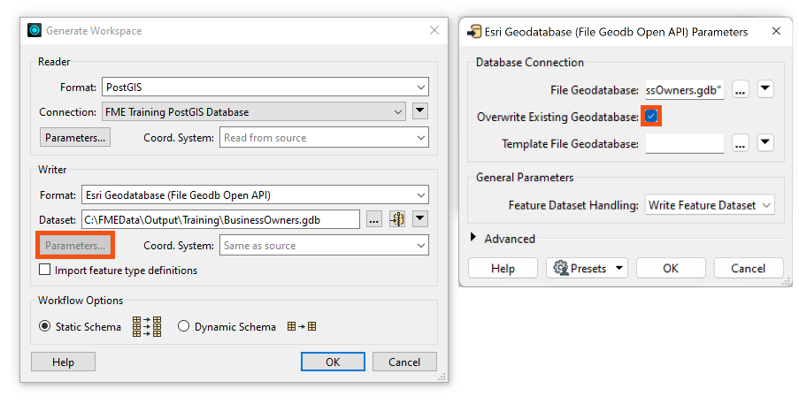
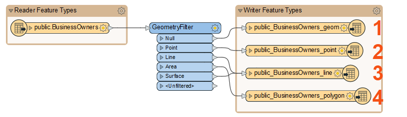
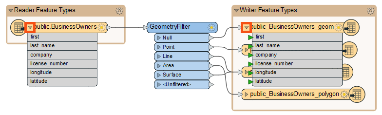
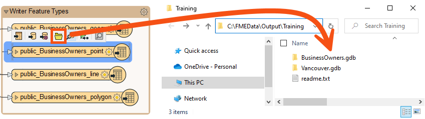

Learning Objectives
After completing this lesson, you’ll be able to:
- Identify when to use Generate Workspace versus starting with a blank workspace.
- Connect to a database.
- Quickly create a workflow using Generate Workspace.

Learning content in the FME Academy presents a user's story addressing their data integration challenges with FME. You should follow along with their actions using your own installation of FME (2022.0 or later) or request an on-demand virtual machine in the footer link below. Some lessons will require you to follow their steps or take additional steps to answer a quiz question.
Resources
- Complete workspace
- C:\FMEData\Workspaces\IntegrateDataWithTheFMEPlatform\quickly-create-a-conversion-workflow-complete.fmw
Jumpstart Your Data Integration Workflows

Jennifer is a GIS Specialist working for a local government. She needs to read a table of business license data from a PostGIS database and write it to an Esri geodatabase, a widely-used spatial database. The PostGIS database is used internally, while the geodatabase is used in public-facing applications. Therefore, she wants to edit the attribute names and filter out some features with revoked business licenses in the final geodatabase to have appropriate data for displaying to the public.
Before she conducts those steps, however, she needs to get started with a basic conversion workspace. She could add her readers and writers manually on a blank canvas, or she could use the Generate Workspace dialog to set up her workspace faster.
Jennifer is working with the same BusinessOwners dataset as Sven from the previous course, but she’s reading it from a database instead of an Excel spreadsheet.
Jennifer knows the Generate Workspace dialog will let her quickly create a workspace. She has to supply the reader and writer format and dataset locations, and FME does the rest. It will automatically do its best to duplicate the reader schema (formal definition of a dataset’s structure) on the writer, handling differences in data types or restrictions on geometry types or attribute name lengths.
To generate a workspace, Jennifer starts FME Workbench (2023.0 or later) and clicks Generate Workspace in the Start tab.
Follow along with Jennifer's steps using your own version of FME.

Connect to a Database
With the Generate Workspace dialog open, Jennifer first fills out the Reader section to define her source data. She chooses PostGIS by typing in the Format field and selecting “PostGIS” from the drop-down options.

Next, she needs to connect to the database. She can do that with a database connection.
Database connections save authentication information for databases. FME also has web connections to connect to web services and APIs. They are stored on the user’s operating system profile, so authentication information can be stored separately from the workspace. They can also be published to FME Server to allow multiple users to share them without exposing any passwords.
Learn More

From here, she fills in her database connection details.
If you are taking a Safe Software-hosted training course, you can choose the existing database connection from the drop-down instead of creating a new one.

She clicks Test and then Save. FME tests the connection and confirms that it is working.
Because Jennifer doesn’t want to read the entire database, she clicks the Parameters button, allowing her to choose the table she wants to read.

She clicks the ellipsis [...] button next to the Tables parameter in the PostGIS Parameters dialog. She clicks the > arrow next to public to expand the list of tables and then picks the BusinessOwners table from the list. This step ensures only the BusinessOwners table will be read.

Once the BusinessOwners table is selected, she saves her changes by clicking OK.
If Jennifer wanted a subset of features, she could use SQL in the Where Clause parameter or a transformer like the SQLCreator to let the database do the work.
Generate a Workspace
Jennifer needs these business tables in an Esri geodatabase to use them in ArcGIS. To create a new Esri geodatabase for this data, she fills out the Writer section of the Generate Workspace dialog. She selects the Format “Esri Geodatabase (File Geodb Open API)” and enters the file path “C:\FMEData\Output\Training\BusinessOwners.gdb” for Dataset. BusinessOwners.gdb will be created in the Training folder once this workspace is run.

Before clicking OK, there is one extra step. Jennifer needs to review the parameters of the readers and writers she’s using to ensure that her data is being appropriately transformed. Jennifer knows that while authoring her workspace, she might want to run this workspace more than once for testing purposes. And if she does that without handling the parameters correctly, especially the database operations, she could end up appending the same data to the original output from the first run of the translation. To avoid this mistake, she opens the Parameters and enables Overwrite Existing Database.

This step ensures that the entire geodatabase is rewritten if the workspace runs more than once.
She applies her changes by clicking OK, and FME Workbench generates the workspace.

It is generally a good idea to look at the parameters before adding a reader or writer. If you ever are working with your data and find it looks odd, there is a good chance a reader or writer parameter needs to be changed.
Learn More
Understanding a Generated Workspace
Jennifer notices that FME has automatically added a transformer called the GeometryFilter to the canvas. The GeometryFilter is one of the hundreds of transformers available in FME that allow users to modify their data without having to code. FME automatically added a GeometryFilter to filter incoming PostGIS features by geometry type, writing points, lines, polygons, and collections to corresponding writer feature types. This transformer is needed because a geodatabase feature class can only have one type of geometry, and this limitation is inherent to the data format structure.
Transformers are objects on the canvas that modify features.
You can use transformers to change your data without writing code. If you like to write SQL or Python, you can do that as well using transformers like the SQLExecutor or PythonCaller.
⭐ New for FME 2023.1: you can now access AI Assist in compatible transformers to help you write regular expressions, SQL, or Python.
Remember the problem Sven ran into in the earlier lesson, Understand and Fix Problems With Your Workspace? He added a geodatabase writer manually, but he ran into problems when he tried to write his data. The source of the error was that he had not manually set the geometry type for each geodatabase writer feature type. Using Generate Workspace helps you avoid errors from format limitations like this one by automatically duplicating the source schema on the destination and adding transformers where necessary.
Jennifer sees that Generate Workspace has created four feature types (feature classes in the geodatabase), one for each kind of geometry supported by the geodatabase format.

Remember, feature types correspond to tables for spreadsheets or databases or layers (geometry plus attributes) for spatial data. Each feature type belongs to a reader or writer.
By clicking the triangle on the left of her reader and one writer feature type, Jennifer can see that FME duplicates the reader schema (e.g., attribute names) as best it can on the writer, considering format issues like different data types and restrictions on attribute names. These automated steps are one reason she used Generate Workspace.

After quickly examining the attribute names, she clicks the triangles again to hide them. She’ll examine the schema in more detail later.
Run the Workspace
Jennifer clicks Run to run her workspace and convert her data.

After the workspace has run, the Translation Log reports that the “Translation was Successful.” Jennifer selects one of the writer feature types and clicks Open Containing Folder to confirm the geodatabase has been created.

Jennifer is off to a good start. She has created a new geodatabase from her PostGIS dataset with the business owner data loaded into it. Next, she has to edit the schema.
Exercise
After following Jennifer’s steps, find the size of your BusinessOwners.gdb output to answer the quiz question below. You can check the size on Windows by right-clicking the folder in the File Explorer, clicking Properties, and checking the General tab and the number under Size. On Mac, click the folder in Finder to select it, then use File > Get Info and check the Size.